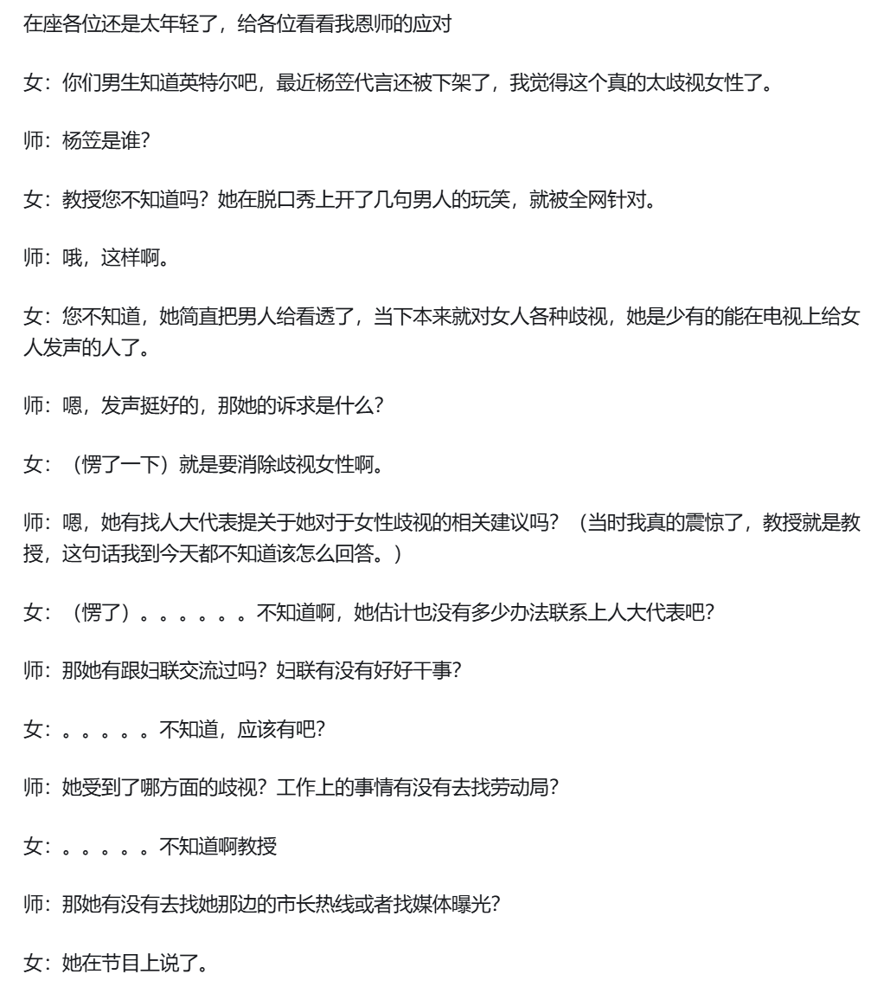
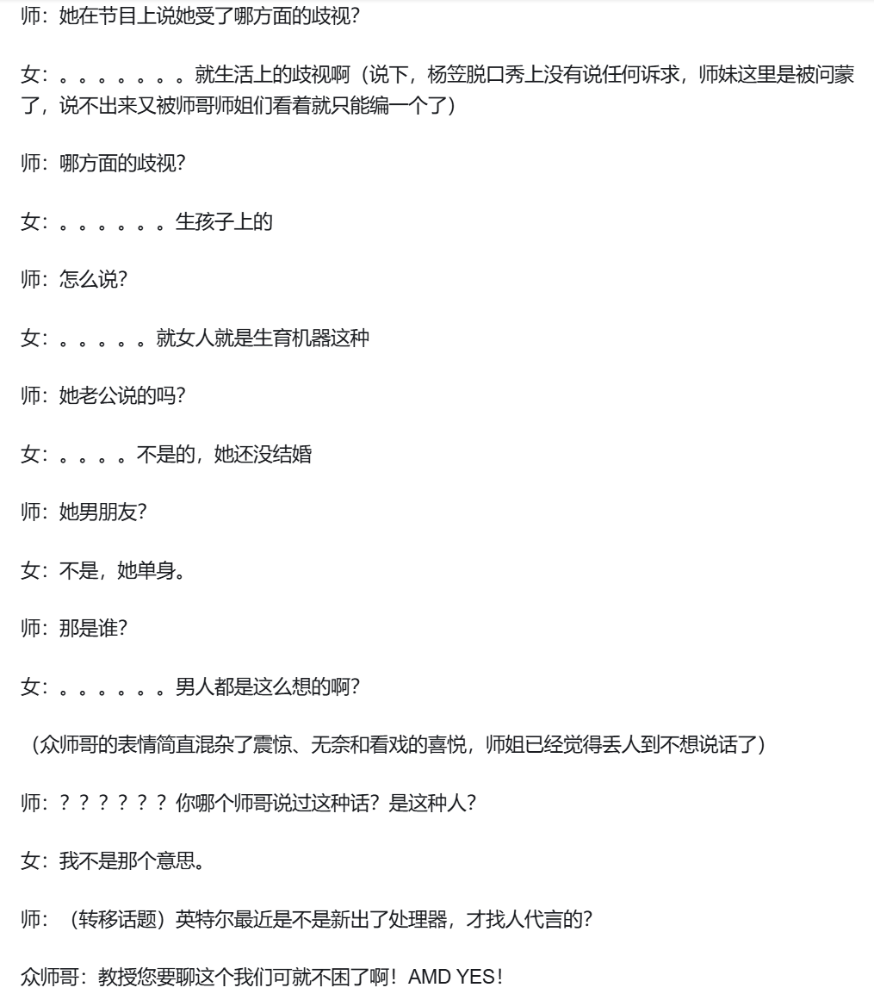

# 序言
很早之前我就想系统性的梳理一下这个思潮与社会问题了。
我不喜欢当代走向极端的女性主义。我身边也有很多很多男生讨厌这点，然而由于 “沉默的螺旋”，即网络社交媒体上部分女性声音占据主流压倒一切，大家流于心中发而不表罢了。
在兼职树洞和 50 多个女生聊天谈心之后，我想说说我的观点。
女性主义到底有什么问题？
我的结论是：
后现代女性主义的那些深度信徒，就是那群总喜欢造词 “好嫁风”“别太爱男”、情绪不稳定喜欢反传统的群体，和心理疾病患者群体是一枚硬币的两面。后现代女性主义成为了精神与情感的呕吐袋，走向了反理性的、类邪教的虚无主义。
# 理论解释
当下后现代的女性主义，下文简称 “女拳” 了。主流媒体里，大家批评女拳最多的地方就是 “只要权利，不要责任”。
我觉得这是现象，不是本质危害。关键问题在于，女拳在刨整个社会的根，是对社会共识的一颗毒丸。
我不是想夸大什么，制造什么焦虑。当然也有可能是我遇到的不正常女性太多了，导致我结论有失偏跛。
# 信任是什么
现代社会的一切文明成果，都是建立在 “信任” 上的，或者称之为 “共识”。最直观的 —— 钱这种玩意，是因为大家都认为有价值，钱本身才有价值，不然就是废纸。社会是想象的共同体，财富的本质，就是积累一大堆的 “信任”。
对 “信任” 的不同理解，也导致了男性向女性向作品里主要剧情的不同。作为男生，我看过很多国内的女频小白文，不是说我有什么特殊癖好，主要因为我看国漫很多年了，且我很吃画风。现在腾讯动漫里，稍微画风精美点的，点进去 —— 腐文；点进去 —— 恶役系；点进去 —— 女频恋爱。后来我也陆陆续续看了一些。对比下来，男性喜欢客观外物带来的 “信任”，比如工业、军队、企业…… 都是基于一些物质；女性倾向于直接攫取情感上的 “信任”，也就是：“大家都喜欢我，大家都爱我”。女频作品其实很像一个大的舞台剧，所有的矛盾只来源于角色之间，而非外界。
可能是出于希望体会情感上的链接，年轻女孩真的很喜欢社交，比如：
- 漫展上希望同好来交流搭讪集邮
- 面对问题时，喜欢先找他人询问，而不是自己先闷头看攻略；尽管可能攻略已经很完善了，但是依然要进行 “互动”
- 非常喜欢相互安利，还有流行的搭子文化
很多这种行为其实并没有获得具体信息，也没有推进具体问题。在男生眼里可能会完全不理解，明明有效率更高且不麻烦其他人的方法，为什么女生总是东扯西扯，绕圈子？
女性的社会化程度更高。她们既有更强的社交能力，也存在更多的社交需求。很多时候，她们并不在意这么做对现实目标有么有用，她们只是更想从这些轻度社交中，感受到对方陌生的善意，感受到美好。
你说因为 “远古时代的采果子工作” 也好，因为 “古代生产力低要依附男性” 也好，女性整体上在 “人际关系处理”，“利用现有规则” 方面较强，但是 “改造客观世界” 方面较差，缺少对客观世界的尊重。尤其 “希望被爱” 的这种情感需求，天生就容易让女性把自己放在客体位置上。
# 反理性的狂欢
任何运动与主张，都要有理论支撑，都要与巨大的人类社会打交道。
现实不是规则怪谈，不是说你一拍脑门制定了什么规则，然后所有人就要遵守，不遵守都枪毙。事实上，只有大部分人认同，各利益方终于达成妥协，一个新规则才能能长久的运行下去。
这也是很多 NPD 和陷入自恋的精神病患者无法理解与接受的。我在兼职中发现，很多年轻女生有个通病：喜欢在脑内写剧本，把对方抽象成某种标签化角色，并深信不疑。有趣的是，这些剧本都高度类似：前男友是一个不尊重女性的坏男，现男友冷落自己是渣男，有的闺蜜是特别好的 soulmate，有的是表面朋友其实对方嫉妒我偷偷使绊子，原生家庭要么父母都是坏人 or 妈妈可怜爸爸坏，而自己是很可怜很可爱的宝宝…… 归根到底，错的不是我，是别人、是社会、是这个世界。
在你脑内，饱和度过高的劣质颜料粉刷成的画本不是现实世界。这个世界不按你想象的方式转。
女权运动对于女性参与者，就意味着改变情感导向思维，跳出舒适圈，发展宏大叙事能力，回到物质世界。
我甚至能想象到一些女拳，她们单单看到这个结论就会十分抗拒，开始反驳攻击。我这里抢答一下：想让平权运动成功就得这样，不是我 “爹味” 要规训你，也不是仅仅针对女性、贬低女性。男性要搞什么运动也是、老人要搞什么运动也是…… 所有的政治运动都是这个逻辑，都得满足这个条件才能成功。我只是把这件事转述出来的第三方。当然，如果你要把这个定义为 “男性思维”，女拳要按所谓的 “女性思维” 推进…… 那世界就是 “男性思维” 的，你不适合这个世界。
编译器爆红，请先怀疑自己，检查一下自己哪块代码写错了进行改正；“啊啊啊啊啊啊啊怎么办啊啊” 的喊叫解决不了问题；而怀疑编译器有问题，应该停下手中的工作，先去医院挂号。
“谁是我们的敌人，谁是我们的朋友，这是革命的首要问题”。一个最基本的问题悬而未决：请问当下女权运动，到底要不要拉拢部分男性？用什么利益拉拢？


从二战后发展到今天，主要的女权参与者最终还是抵不过思维惯性。今日的女权运动比起上世纪竟是开倒车、没有足够的理论支撑的。由于女性群体不愿意改变自己的那个思维方式，最后选择了一条类似酷儿的捷径：“你凭什么定义我？”，“这个词不应该是这个意思，应该是……”。“生物爹” 满嘴飞，贤妻良母变成骂人的话，独立女性却经济不一定独立…… 女拳变成了解构一切的狂欢派对，最后变成了即争夺定义权的游戏。
当我看到小红书一些摆事实讲道理的女性用户，都被大群体切割，被称作 “婻味”“爹味”——
这不光是解构了，这是反理性的癫狂，是极大伤害现代社会的毒丸。
共识没有了，就要乱；一旦乱，就有人受伤；有人受伤，就有人要流眼泪。
# 一场人牲
波伏娃说 “女人的不幸则在于被几乎不可抗拒的诱惑包围着”。
讽刺的是，波伏娃这句话本质上也是一个 “不可抗拒的诱惑”—— 把自己失败的理由和原因归咎于外部环境，这样就可以心安理得不用从自身身上寻找问题，不用去提升自己，不用学习去适应环境。
在争夺定义权之外，女拳有一个类似于宗教的逻辑 —— 我的失败，都怪男的 or 都怪社会爱男。「女性被压迫被歧视，所以 xxx」，xxx 包括一切现象。我以前觉得女权是政治，通过团结特定对象，寻找共同利益，通过政治手段拿到影响力进而再强化这个过程，但最近，女权群体普遍的方法论是「反事实信仰 + 无论证归因 + 包罗万象」，我更倾向于认为现代中国女拳本质上是宗教。宗教让人放弃思考，因为宗教理论非常简单，「一切都是神的旨意」，「一切都是男性的压迫」。
我认为宗教本身没有什么不好。与科学的逻辑证明不同，宗教的核心是 “信”—— 尽管这个无法被证明，但是先相信这个。宗教是团结人群最强有力工具。但一个问题决定了宗教与邪教的区别 —— 你的教义在团结一部分人的同时，有没有让 “信教者” 和 “不信教者”，两者总体好起来？
对于政治斗争我也认为如此，党派斗争是常见的不可避免的。问题在于，你党争的目的，最后是不是能让不党争的技术派能有资源安心做事？让切实劳动的人们可以少受侵害，一起把蛋糕做大？
如果你的教义，只是把原本属于别人的东西搬到己方信教徒的家里，社会整体的利益蛋糕没变大甚至缩水，那就是需要肃清的邪教。
为什么当下女拳喜欢开全女书店、全女酒吧，结果最后几个姐妹内讧不欢而散，还指责对方爹味？因为教义只是一味地抢别人的蛋糕，没有做大整体蛋糕啊。
女性平权和女性解放是必然的，是进步的，但是其根本原因是因为要把女性拉过来干活，是要做大蛋糕。商鞅给奴隶自由，让奴隶成为封建小农，不是因为可怜他们；启蒙运动也不是因为关爱平民百姓才要求君主立宪，强调平等…… 归根到底，都是要解放生产力。 是因为生产工具发展了，要更多劳动力做大蛋糕。
女拳当下的作风会有一个十分恶劣的长远影响。我要强调，大部分女性确实是弱势群体。近些年的海量个例的：“骗彩礼”、“豆瓣私密小组计划谋杀男婴”、“不公正法官裁决”、“小作文污蔑” 等等等，这些都是集中于都市女性身上。这群人是女性中的强势群体，她们了解规则，敢剑走偏锋利用规则。
然而，当这群人钻空子，引发男女对立，甚至是争执仇恨后，一地鸡毛又由谁来收拾？光说我知道的：
-
体制内单位招聘时标明需要岗位辛苦、需出外干活，但女拳师钻进岗位却不承担工作，声称身体不适
-
博士师姐上岸后一年不怎么来实验室，博三突然结婚怀孕，本属于她的所有工作，甚至毕业论文都摊派给全组师弟
-
女 HR 相信 girls help girls，招来一堆不干活只会搞小团体的废物，于是整个部门解散打包走人
-
女法官的枉法偏袒，逼出了多起 “男性拿起刀维权” 案件
这群女拳的所作所为，不光伤害同时期的男性，还堵死了后来的全体女性的出路。矫枉必须过正，也一定会过正。女拳这样下去不光是注定失败的问题 —— 当社会大部分群体积累了满腔的怒火，从开始不再招聘女性，到失控的发泄式清算，城市小资的这群始作俑者早已逃之夭夭，或者摇身一变，成了贤妻良母的形象。最终受影响的，是那些被前辈坑害的年轻女性，是农村那些真正面临家暴与经济问题的弱势女性。
真正的弱势群体，是需要平权的，需要支付转移的。同时我身边有关系很好的女生朋友，她们在找工作上已经受到了这群女拳的影响，导致刻苦努力的她们，明明才能比同龄男生出众，但在岗位竞争上却被刷掉。
这就像邪教举行的一场活人祭祀。信教徒们将男性群体的利益和全体女性的未来点燃，换取自己身上沾血的珠宝手串。
# 常见现象
对于女拳，有一些很常见的现象在此处进行总结。
# 年龄不同，观点不同
年轻女拳张扬 “女性群体” 的大旗，但是婚恋生育上和家里催婚的妈妈谈不拢；生活上和男朋友的妈妈容易关系紧张。内部就存在分歧；
我的客户群体中 20 出头的女性和 30 左右的女性观念差异也巨大。一边是坚定的不结婚，b 站快乐生活区女生；一边是急于结婚，现实理性，甚至让我把实验室师兄的联系方式推荐过去的大城市白领女性；
我认为某种意义上，未婚年轻女性和已婚女性完全是两个物种。资本主义社会中的 “女性 "，其婚恋生育能力被债券化，兑换成来自男性的转移支付，以此掌握超额消费的能力。因此，“女性" 必然仅仅意味着 “未婚女性 "。已婚女性被她们开除女籍一点都不奇怪，因为婚姻与生育意味着自身 “女性" 这个身份进行再生产的终止。在这种性别关系中，女性已经不再是小资产阶级，而是利用生育债券的金融资产阶级。她们销售的不是生育，而是一种名为 “生育 " 的期货产品。女性生殖器官成为了一种房地产式的价格锚定物。与房产一样，其价格不取决于自身价值，而仅仅取决于其购买者的支付能力，表面上的意识形态 (无论是压迫论，还债论，生育疼痛论，后遗症论)，都只为了一个目的，即将人口再生产 / 地产的价格推高至购买者能维持自身基本生存后的支付能力上限。
同时，这种经济秩序必然要求她们垄断对生育劳动的解释权，极度贬低男性的生育劳动价值。故意忽视在在绝大多数社会契约下的，男性对自己的怀孕伴侣都承担赡养责任和义务，否则根本无法保证自己的后代能安全健康出生成长。将男性排除出生育这个长期过程本身就是错误。
许多厌男与生孩子警告，最终只是抬高价格的筹码。
记住，金融投机者会对任何能够影响自身资产价格的风吹草动本能的产生歇斯底里的仇恨。
# 不婚厌男
同时有关独立不结婚女性，还有一个很耐人寻味的点 —— 以地雷女和微博追星女为主体，这部分女性在网络上发表大量仇恨男性言论的同时，特别痴狂于帅气的男明星。韩国女团甚至包括国内的一些学舞教舞的博主，都有一个相似的特点，就是魅男且厌男。
实际上有一点东西有点反直觉，就是说韩国女团最核心的受众其实不是男性，而是女性。她们在演出中塑造的形象大概是这样子的：
“姐又酷又帅又美又性感，但姐对你 (男人) 不屑一顾，但是又因为姐又酷又帅又美又性感，所以你 (男人) 必须喜欢姐”
她们必须要在穿着打扮以及舞蹈动作上魅男，因为不这么做无法证明她们 “又酷又帅又美又性感”，但她们在一些细节上又得厌男，因为她们的衣食父母是集美们。
其实韩国女团整体上是集美们的意识投射，和集美们精神状态挺像的，需要用魅男来证明自己的魅力，又要表现出对男人不屑一顾 (厌男) 来确立自己的地位，虽然集美们管这个叫 “独立女性”，但实际上无论是厌男还是魅男，都还是在绕着男人打转。
# 打扮自由
在公共场合的穿衣打扮，哈集美会说 “我穿的美美的让自己开心”，一会又吐槽 “服美役”；
凌晨的酒吧安全无比，白天的地铁危机四伏。
这种对话语权的垄断，是不尊重客观世界的表现。
同时，一些事物本身是有客体性的，就是让他人观赏评判的。
以舞蹈为例：古代的富贵人家的大家闺秀都只追求琴棋书画，没有学舞的。反而青楼的都是以舞姬出名。
因为舞蹈的本质就是一种展示自身身体让别人评头论足的行为。而琴棋书画展示的都是工具和物品，所以自然无法和琴棋书画相比。
这个世间这么多对舞蹈有偏见的，为什么没有一个对学习琴棋书画的女的有这种偏见？
因为舞蹈的本质决定了这个行业的评价。偏见不分男女，而是覆盖整个舞蹈这个行业 ——
耄耋老讴弹一首名曲，依旧受天下人尊敬追捧。
耄耋老讴与人对棋，依旧受天下人尊敬追捧。
耄耋老讴写一手书法，依旧受天下人尊敬追捧。
耄耋老讴画一副绝画，依旧受天下人尊敬追捧。
但是，你让耄耋老讴去跳一支舞蹈，你觉得去看的人会是什么心里和期望？
琴棋书画能承受岁月的洗礼，舞蹈能吗？人们为什么不看广场舞大妈跳舞？人们为什么喜欢看年轻漂亮的跳舞？
女性有拒绝不礼貌评判的自由，但是不能按着别人的头 “不许看”，禁止不喜欢。
先辈们争取女性平权，是为了让你们能受教育，能工作，能选择自己的人生方向。而不是让你打扮的像一个烧妓，让整个世界围绕你的无理取闹买单。
# 地雷女

这一群体是什么样有点懒得说了…… 我见到太多经历太多有点说烂了
简单而言就是沁淫在日本文化的女神经病，多半是二次元、Coser 和虚拟主播。
群体画像为：
- 平均学历较低，中专较多；爱好以二次元为主，很喜欢用主播女孩重度依赖中的糖糖代指自己；社交主要集中于 QQ 空间和微博，发言习惯：“小蛋糕”、“特可爱的小宝宝”，思维极为巨婴化，喜欢用可爱的宝宝代指自己；互联网上口嗨乱叫，线下唯唯诺诺；
- 情绪极为不稳定，像火焰一样波动邪性；明目张胆的自私，可能会满嘴脏话；
- 基本人均精神病，抑郁起步，躁郁、NPD、强迫、精神分裂等等等；为了快感会 OD（过量嗑药），也导致其情绪极端不稳定，OD 后有时会昏迷不醒
- 厌男的同时，情感需求强烈，容易走向滥交；同时由于虚荣心与浮躁的物质需求，很多走上援交、一日女友的工作；对男友的要求出奇的一致，就两点：长发，长的帅；喜欢狗塑对方，称对方为温柔小狗
- 抱怨原生家庭，会割手臂自残并发空间炫耀。有的不敢自己割就花钱请别人，定制想要的伤口形状返图
- 恨国，精神日本人，会把 “去中味” 挂在嘴边，但是很多还会往入党、体制内钻图生活稳定
地雷女的平均审美是要比社会平均强的。不管是小画师还是厕妹，在微博还是空间，其文艺水平要比其他社群高。
我不喜欢大多数这类沾染地雷女气息的作品。地雷女类文艺很喜欢 “逃离”，“逃离原生家庭”、“逃离中式教育”，痴迷于 “逃避虽然可耻但有用”。这类群体在艺术＋女拳 + 精神病的放大下，走向了极端。现实生活中，我在自己认识的人群管中窥豹 —— 艺术生里的恨国党很多很多。
我不喜欢只有这样，仅有情绪的躁动，没有稳固的支撑；这是一种轻浮的空中楼阁
我认为艺术是对现实的再加工，本身就有结构性和批判性。一个好的艺术创作者，会有一些虚无主义倾向，这是一个度的问题。好的文艺作品在解构批评当下之后，一定是能让现实中的人们思考的，给人在现实中前进的力量的。
海边白色浪花的翻腾潮涌之下，是沉默且坚定的礁石。
地雷女的世界，我看到了飘在粉色泡泡里的情绪呕吐物：
我不描绘日积月累的亲情，我听不到革命的寥廓枪声，我不叙述日常生活的碎金色故事
我拍我自残的伤口，我亲手去揭自己的伤痂
在互联网的致幻剂下，我看到流出的鲜艳色彩，
那必须是对我溢出的爱
# 时代背景
最后我要说美国。
根据博主的观察和切身体会，文化和思潮是会流动、会辐射的，而且这个影响远比你想的要大、要隐秘。
- 比如八九十年代的 “粤语” 风潮，甚至 “高贵的北京腔” 当时都被压一头；
- 比如从美国发展几十年的平权运动，到如今各国的 LGBT 粉墨登场；
- 比如国内土老板们那些特别的执着：体制内标配用什么车于是自己仿照买什么车；在县城发展的好好的，明明一年到头去不了首都几次，也喜欢在北京购置房产；还有千禧年之前特喜欢买军用车牌……
- 大洋彼岸的音乐漂洋过海，融合为到 k-pop 风中的说唱，EVA 中的经典爵士，以及日系大乐队风格里的布鲁斯……
我终于明白，为什么外媒新闻总是用” 华盛顿政府 “” 北京方面 “这些词语代指国家；终于明白为什么那些政治立场测试的问卷里，总是有堕胎相关议题，总是将白左文化和经济马学绑定在一起 ——
石子落入，“咚 ——”，水面泛起涟漪，涟漪的荡漾，是从中心扩散开的。
目前的世界中心最强国，在这场思潮中扮演了重要的角色。
自上个世纪后半叶，美国的精神分析学飞速发展；1967 年的 3 月，第十二街骚乱令这艘大船改变航道，转向一个世界金融帝国。旧美国的死亡成为了美帝国真正崛起的底色。他们在全世界养出了太多顺从安稳，不问世事，在娱乐中麻痹自己，而同时又因为娱乐附带的不可避免的意识形态，成为这套帝国体制最坚定的打手和负责制。在这套拧巴的帝国体系下，全世界的心理疾病患病者越来越多。
从国内互联网可以发现：几乎所有只依靠虚拟世界谋利，而自己没有赖以生存的技术的博主，多多少少思想沾点极端，扭曲。
这里的技术，指与现实世界紧密，且经过上时间训练才能掌握，比如各种工人，医生，厨师。重点在于能频繁的和现实世界的空气，泥土，机器，人类交流，用肉体凡胎去体验热冷疼痛。专业的术语叫做实感，就是你在对这个世界造成影响的同时，也在把你个人的肉体和思想塑造的更加凝实。与之相对，你天天在手机电脑上见识各种人风景，你对现实世界就会变得无所适从。
游戏区和颜值区，这类博主很多。
精神疾病和虚无主义是分不开的。后现代的女性主义与心理疾病是双手，解构主义是一把手术刀，它们将当下社会的胸膛剖开，希望进行一场改革的手术，然而它失败了。我们所有人都知道，当你把胸膛剖开，掏出心脏的那一刻，胸腔里就只有虚无，社会就剩下死亡，而双手在失去供血的同时，会沾满了氧化的暗红色血迹。
# 小结
二十年一路高歌的后现代女权，极大解构了社会的共识。人们不再互信，做事开始没有底线。一旦经济出现下滑，精神上不可避免的走向虚无主义。
虚无是可怕的，没有了意义，一切鲜活灵动都会褪色为黑白灰。于是我们看到许多人开始右转，选择了本质主义。也就是” 男生得有个男生样，女生要有个女生样 “。
宁愿保守，也不虚无。
最后，用美国的一件有趣现象结束文章：
2023 年的时代人物给了泰勒斯威夫特。霉霉粉提出了一个政治概念：the 90s trend
号召 z 时代的年轻人，特别是音乐爱好者，利用音乐集会表达政治意向。他们宣称：内容不重要，打破社会常态的爽感最重要。然而这不是霉粉的独创，她们实际上是被 KPOP 粉丝、喜欢听韩国音乐的美国民主党政治正确白女启发的。
霉粉在最近两年非常明显的激进化，泰勒斯威夫特本人前往好莱坞、前往纽约打拼后，失去了过去那些乡村音乐男性观众，新粉丝基本都是一些向往繁华生活、向往名利场，甚至向往有丰富多彩私生活的年轻白人女孩。这些女孩很多出生在美东或者美西正在衰落的大城市，比如上课了明天、费城，拉斯维加斯。她们在这些城市日常能感受到生活其实在向下走，但是她们又不愿意去承认她们的那些白男同学，那些充满仇恨的、动荡的，充满了对现实不满的状态。于是她们就逐渐被某种爱和正义可以治愈一切的价值观所吸引。泰勒斯威夫特可以看作这些粉丝向往的人生与人设，她们借机去宣扬那种白左议程，“爱和正义可以治愈一切” 的那个价值观的认可。